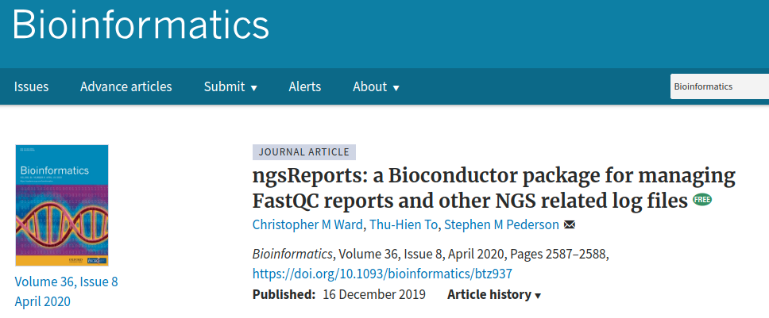
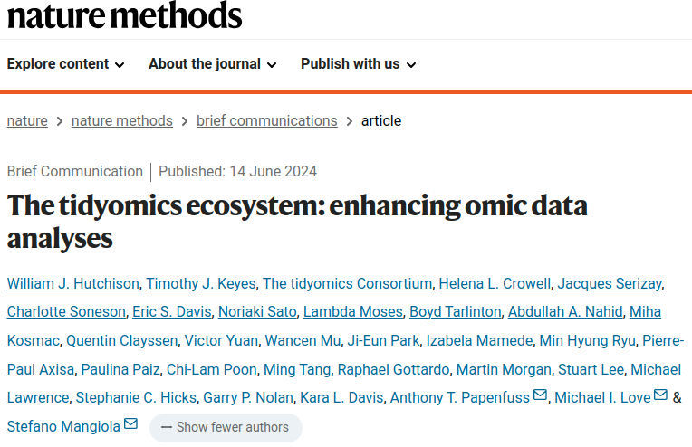

body(summary)UseMethod("summary")RAdelaide 2024
. . .
. . .
Tools > Install Packages...
install.packages("pkg_name")Seurat for scRNA. . .
. . .
. . .
ngsReports nearly every day (still…)
R) in 2001. . .
R generally has bi-annual releases
. . .
BiocManager() is a CRAN packagegithubBiocManager::install(c("pkg1", "user/pkg2"))DESeq2 & edgeR for bulk RNA-Seq AnalysisDiffBind & extraChIPs for ChIP-Seq Analysisfgsea for GSEA within R. . .
GenomicRanges for working with GRanges objects
body(function_name) always has comments removedR directory
. . .
browseVignettes()
R has two common types of objects
S3 are very common & old (1970s)
lm() or t.test()S4 introduced in ’90s
R6 etc). . .
summary()
vector or data.framesummary(letters)
summary(mtcars). . .
How does summary() know what to do for different data structures?
summary() it’s a bit oddbody(summary)UseMethod("summary"). . .
summary() uses different methods depending on the object classmethods(summary) [1] summary.aov summary.aovlist*
[3] summary.aspell* summary.check_packages_in_dir*
[5] summary.connection summary.data.frame
[7] summary.Date summary.default
[9] summary.ecdf* summary.factor
[11] summary.glm summary.infl*
[13] summary.lm summary.loess*
[15] summary.manova summary.matrix
[17] summary.mlm* summary.nls*
[19] summary.packageStatus* summary.POSIXct
[21] summary.POSIXlt summary.ppr*
[23] summary.prcomp* summary.princomp*
[25] summary.proc_time summary.rlang_error*
[27] summary.rlang_message* summary.rlang_trace*
[29] summary.rlang_warning* summary.rlang:::list_of_conditions*
[31] summary.srcfile summary.srcref
[33] summary.stepfun summary.stl*
[35] summary.table summary.tukeysmooth*
[37] summary.warnings
see '?methods' for accessing help and source codeThe class is given after the dot Those marked with an asterisk are hidden
summary.data.frame() summary() is called on a data.framesummary.lm() lm(). . .
summary.default()body(summary.default)
summary(letters)methods(class = "data.frame") [1] [ [[ [[<- [<- $<-
[6] aggregate anyDuplicated anyNA as.data.frame as.list
[11] as.matrix as.vector by cbind coerce
[16] dim dimnames dimnames<- droplevels duplicated
[21] edit format formula head initialize
[26] is.na Math merge na.exclude na.omit
[31] Ops plot print prompt rbind
[36] row.names row.names<- rowsum show slotsFromS3
[41] sort_by split split<- stack str
[46] subset summary Summary t tail
[51] transform type.convert unique unstack within
[56] xtfrm
see '?methods' for accessing help and source codelibrary(tidyverse)
methods(class = "data.frame"). . .
print() methodprint(my_tbl, n = 20)
print.tbl (which is hidden)S3 objectsdata.frame, list, htest, lm etc). . .
is() instead of class()is(band_members)[1] "tbl_df" "tbl" "data.frame" "list" "oldClass"
[6] "vector" . . .
R looks for print.tbl_df() \(\rightarrow\) print.tbl() \(\rightarrow\) print.data.frame() etcprint.default()Many Bioconductor Packages define S4 objects
@ symbol for “slots” as well as $ for list elements
tidyversetidyverse by > 10 yearstidyomics is an active area of Bioconductor development
. . .

S4 implementations of S3 objects
data.frame (S3) Vs DataFrame (S4)list (S3) Vs List (S4)vector (S3) Vs Vector (S4)rle (S3) Vs Rle (S4)DataFrame and you have a data.frameMany S4 objects & methods were developed in the days when compute resources were limited
library(S4Vectors)
test <- c(rep("X", 10), rep("Y", 5))
test [1] "X" "X" "X" "X" "X" "X" "X" "X" "X" "X" "Y" "Y" "Y" "Y" "Y"Rle(test)character-Rle of length 15 with 2 runs
Lengths: 10 5
Values : "X" "Y"data.frame Objectsdata.frame Objectsdata.frame
rownames. . .
tibble aka tbl_df
rownames are always 1:nrow(df)data.frame typeDataFrame objects?DataFrameS4 version
tidyversetidyomicstibble directlyextraChIPs::as_tibble()
S4 objects to ggplot()DataFrame objectsdplyr will not work on DataFrame objectstidyverse)
subset() pre-dates dplyr::filter()rbind() and combineRows() \(\implies\) bind_rows()cbind(), combineCols() and merge() \(\implies\) joinssort() \(\implies\) arrange()unique() \(\implies\) distinct()mutate(), summarise(), across(), pivot_*()DataFrame objectstbl_df objects)
CharacterList() from IRangesS4 lists can be typed \(\implies\) memory efficiencyList objects can exist in a compressed form \(\implies\) memory efficiencyDataFrame objects can have S4 objects as columns
S3 data frames cannotBy typing a list we only need to record the type once, instead of once for each element. Can make a big difference with large objects
DataFrame objectslibrary(IRanges)
genes <- c("A", "B")
transcripts <- CharacterList(
c("A1", "A2", "A3"), c("B1", "B2")
)
transcriptsCharacterList of length 2
[[1]] A1 A2 A3
[[2]] B1 B2. . .
DF <- DataFrame(Gene = genes, Transcripts = transcripts)
DFDataFrame with 2 rows and 2 columns
Gene Transcripts
<character> <CharacterList>
1 A A1,A2,A3
2 B B1,B2. . .
library(extraChIPs)
as_tibble(DF)# A tibble: 2 × 2
Gene Transcripts
<chr> <list>
1 A <chr [3]>
2 B <chr [2]> DataFrame objectsDataFrame objectslistmetadata(DF) <- list(details = "Created for RAdelaide 2024")
glimpse(DF)Formal class 'DFrame' [package "S4Vectors"] with 6 slots
..@ rownames : NULL
..@ nrows : int 2
..@ elementType : chr "ANY"
..@ elementMetadata: NULL
..@ metadata :List of 1
.. ..$ details: chr "Created for RAdelaide 2024"
..@ listData :List of 2
.. ..$ Gene : chr [1:2] "A" "B"
.. ..$ Transcripts:Formal class 'CompressedCharacterList' [package "IRanges"] with 5 slots. . .
Point out the @ structure
DataFrame objectsmcols()
mcols(DF) <- DataFrame(meta = c("Made-up genes", "Made-up transcripts"))
mcols(DF)DataFrame with 2 rows and 1 column
meta
<character>
Gene Made-up genes
Transcripts Made-up transcripts. . .
glimpse(DF)Formal class 'DFrame' [package "S4Vectors"] with 6 slots
..@ rownames : NULL
..@ nrows : int 2
..@ elementType : chr "ANY"
..@ elementMetadata:Formal class 'DFrame' [package "S4Vectors"] with 6 slots
..@ metadata :List of 1
.. ..$ details: chr "Created for RAdelaide 2024"
..@ listData :List of 2
.. ..$ Gene : chr [1:2] "A" "B"
.. ..$ Transcripts:Formal class 'CompressedCharacterList' [package "IRanges"] with 5 slotsS4 Object StructureS4 objects have slots denoted with @
S4 class
NULL) objectsS3 or S4 objectsS4 Object Structurelapply our way through these objectsobject@slotName
slot(object, "slotName")DF@listData$Gene
[1] "A" "B"
$Transcripts
CharacterList of length 2
[[1]] A1 A2 A3
[[2]] B1 B2slot(DF, "listData")$Gene
[1] "A" "B"
$Transcripts
CharacterList of length 2
[[1]] A1 A2 A3
[[2]] B1 B2S4 Object StructureslotNames(object)slotNames(DF)[1] "rownames" "nrows" "elementType" "elementMetadata"
[5] "metadata" "listData" . . .
getSlots("DFrame") rownames nrows elementType elementMetadata
"character_OR_NULL" "integer" "character" "DataFrame_OR_NULL"
metadata listData
"list" "list" S4 MethodsS3 method dispatch uses the method.class syntaxS4 is very different but has some similarities. . .
S4 objects almost always have hierarchical classes
S3 objects. . .
Generic function must be defined for each method/classS4 Methodsis()is(DF) [1] "DFrame" "DataFrame" "SimpleList"
[4] "RectangularData" "List" "DataFrame_OR_NULL"
[7] "Vector" "list_OR_List" "Annotated"
[10] "vector_OR_Vector" . . .
is(DF, "DataFrame")[1] TRUEis(DF, "data.frame")[1] FALSE. . .
methods(class = "DataFrame")S4 Methodsbody() will return standardGeneric()
UseMethod(). . .
getMethod(f = "nrow", signature = "DataFrame")Method Definition:
function (x)
x@nrows
<bytecode: 0x55e8874d0dc8>
<environment: namespace:S4Vectors>
Signatures:
x
target "DataFrame"
defined "DataFrame"R
S4 object classes are common
CRAN packages (spatial/GIS). . .
tidyverse